Loupe — a community discovery site for designers where every published work arrives with its author's own breakdown. This page is the market evidence the product is argued from. Every factual claim carries a link or a screenshot taken for this phase; what could not be sourced is marked [?] or unverified rather than rounded into a number.
Three groups, max five per group. Set signed off by the designer at the step-1 gate: Fonts In Use was raised from aspirational to hard as the phase's main object of study; Land-book was dropped to keep hard at five; the market is international with no local-market row; Polaris and Material left the competitor set and became a language reference.
| Product | Why it belongs here | What specifically to learn from it |
|---|---|---|
| Fonts In Use fontsinuse.com |
The only shipping product with Loupe's exact mechanic: a work, an author-written structured breakdown, and every field of that breakdown doubling as the search index. Narrower domain, running since 2010. | Whether a hand-written breakdown survives at scale without moderation, and what makes contributors write one. |
| Dribbble | The canonical shot gallery: designers publish their own work, likes, follows, collections — the social layer Loupe inherits. | That its whole filter set is Tags + Color + Timeframe, and that Color is machine-extracted
and already a live facet at /shots?color=050504. |
| Behance | Long-form project case studies by the maker — the closest existing thing to "the author explains their own work". | How much structure authors invent when the platform gives them none: the credits table on
the studied project is hand-drawn out of ⎯ characters inside free text. |
| Mobbin | A searchable library of real product screens, browsed by pattern and element — the closest match to Loupe's "task on the desk" behaviour. | That retrieval itself is the paywall: "Filter & search results — Limited" on Free. |
| Savee | Saving and discovery for designers; the collection layer Loupe copies. | Its retrieval stack — advanced filters, AI recommendations and search by image, a fourth candidate the brief did not list. |
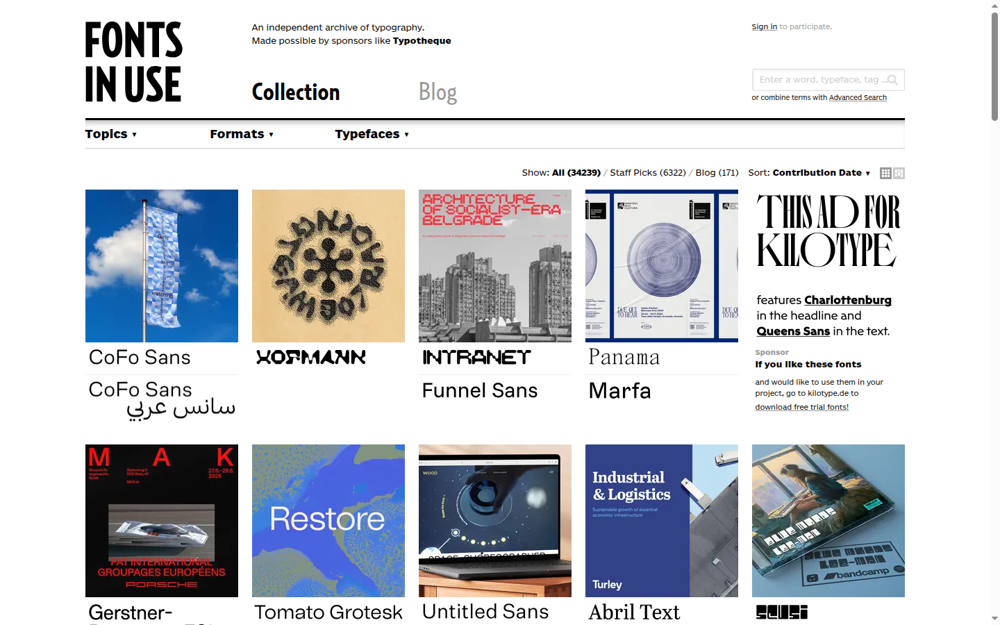
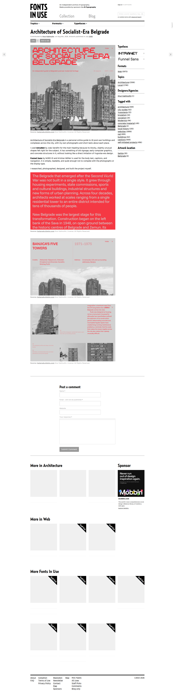
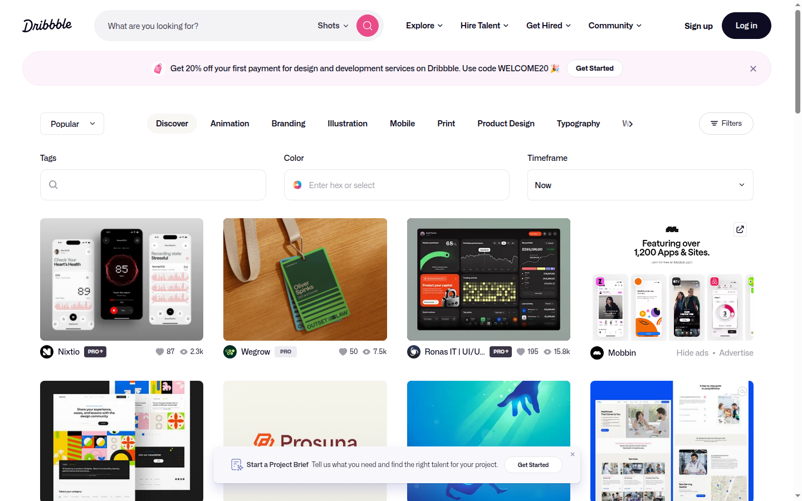
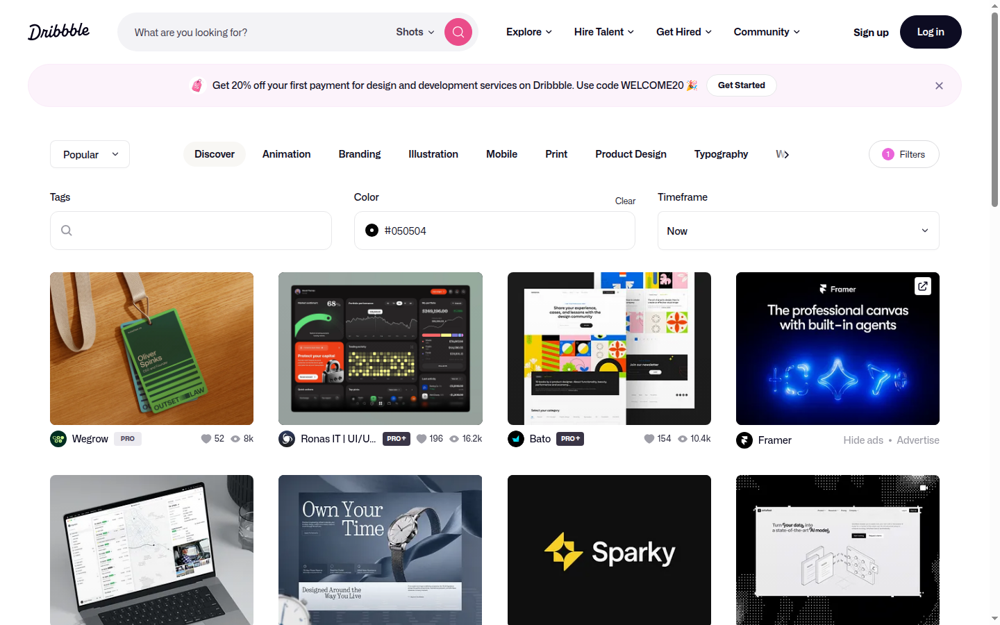
/shots?color=050504 and filters the corpus. Colour-as-index already exists on the
market's largest gallery, generated with no author effort.
screens/dribbble-auto-palette.png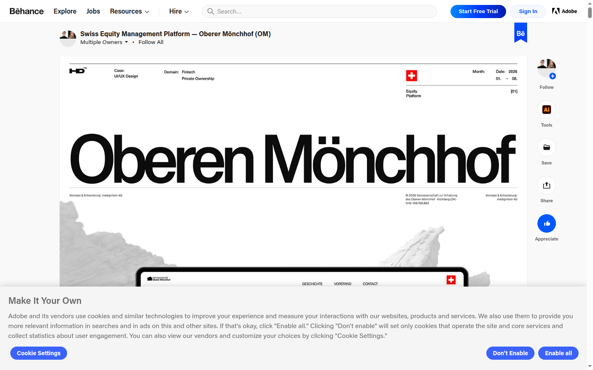
⎯ characters
inside a free-text block, with a hand-typed "View live:" link. Authors want structure more than
they are given.
screens/behance-project-detail.png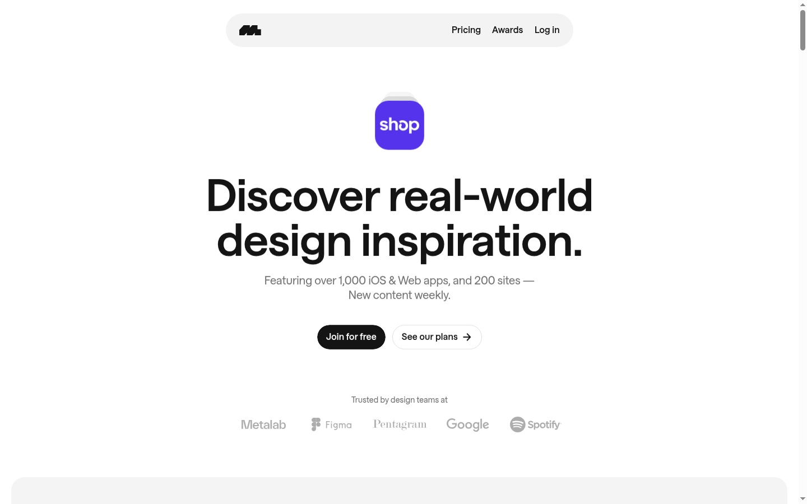
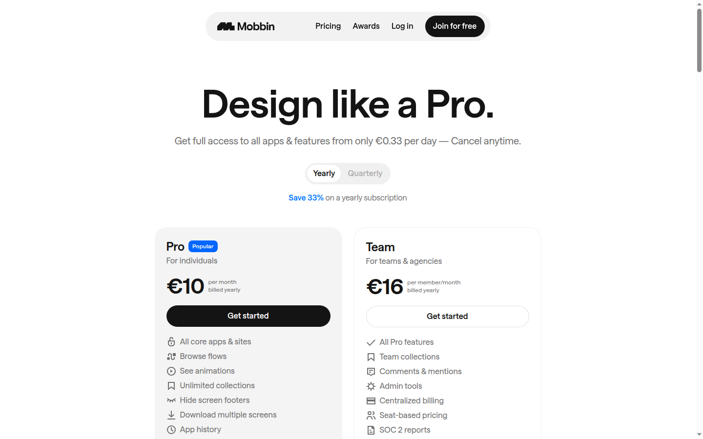
| Product | Why it belongs here | What specifically to learn from it |
|---|---|---|
| Figma Community | Construction is fully available: open the file, read the layers, styles and variables. The limit case of transparency. | That even with total transparency Figma still shipped Inspo (Beta) as a trending feed — the feed is the default surface even for the tool vendor. |
| CodePen | Result and source on one screen by default — "a social development environment for front-end designers and developers". | Why it needs no structured fields: the artifact is executable, so a breakdown is redundant. Loupe's images cannot be executed, which is the whole reason a breakdown must exist. |
| Are.na | Reference collecting where meaning comes from which channels a block sits in, not from tags. | The alternative to properties: connection as the index. |
| Awwwards | Every entry carries a structured jury evaluation, and the directory filters by Font and Color — two of Loupe's three axes, shipping. | The scoring model and the single-select typeface filter. |
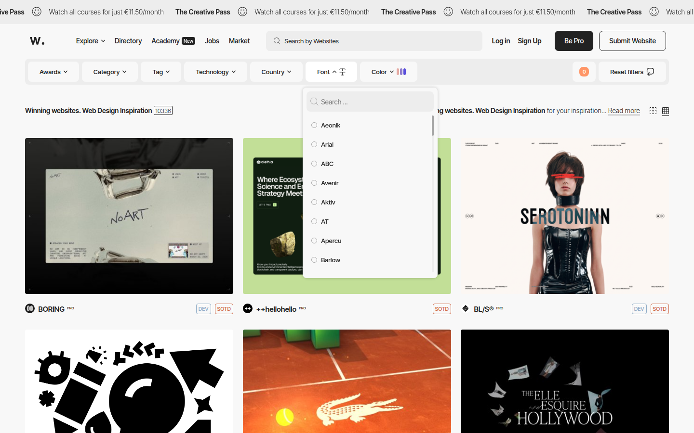
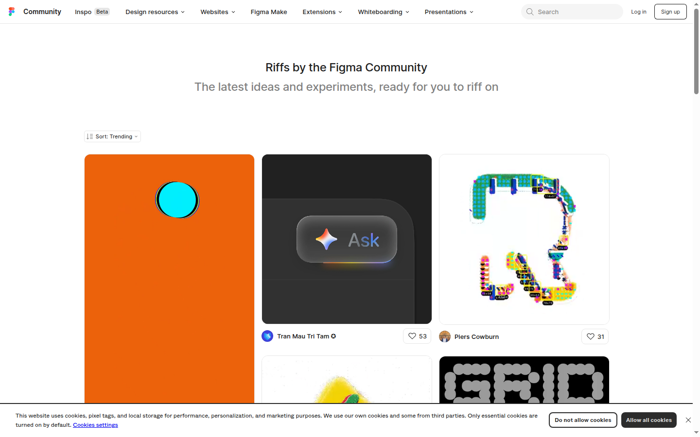
| Product | Why it belongs here | What specifically to learn from it |
|---|---|---|
| Cosmos | The only product in the set that turns provenance into a filter rather than a disclaimer, and the one whose search controls are built on properties a person can point at — colour and visual likeness — instead of words. | Two mechanics: AI content → Show / Blur / Hide, and "Cosmos researches images — surfacing the artist, source, and story", i.e. the platform supplies attribution rather than the uploader. |
| Refero (browse) | Split from Refero Styles + MCP on 2026-08-07 — see the note below the matrix. The browse product is a direct competitor for the primary persona's attention: the deepest structured taxonomy on the market, a Figma plugin, and a self-description that sits squarely in Loupe's category — "UI/UX references and design inspiration". Its entry question, "What are you designing next?", is the brief's primary user restated. | That a task-named taxonomy is the entry surface and facets refine inside it — the pattern-4 mechanism. |
| Layers | Listed at the gate as a community built around writing about craft. That rationale did not survive verification. | Kept as a data point, not a benchmark: the live site is a tag rail over a "Hot" shot feed with inline ads — a Dribbble-shaped entrant. |
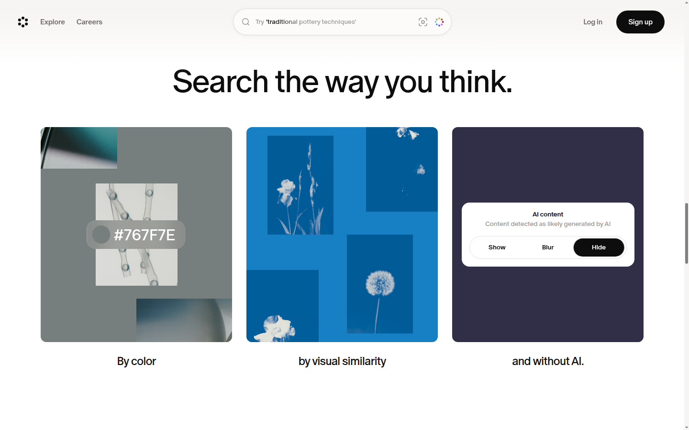
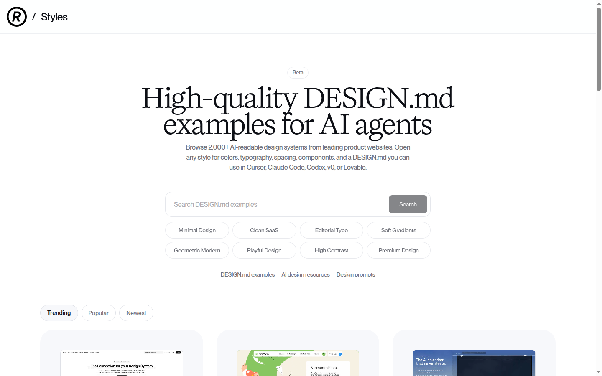
Loupe's success criterion 1 is already met by a shipping product. A Refero Styles
entry publishes named colour roles with a usage note each ("Hairline #e5e5e5 — borders,
input outlines, card edges, badge outlines"), a type scale with its ratio named outright ("Major
Second (1.125) from 16px base") and every step given as 48px · 600 · 1.1, spacing as
density / 4px base unit / 1280px max width / section gap / card padding / element gap, border radius
per element, elevation, and DO guidelines — all generated from a live site, free to browse, with a
source URL back to the product.
This does not kill Loupe. It moves the argument: the values are table stakes to match, and the defensible field is the one a machine cannot extract — why a choice was made.
| Product | Audience | Product core | Key mechanic | Trust | Monetization |
|---|---|---|---|---|---|
| Fonts In Use | Typographers, designers, foundries | "A public archive of typography indexed by typeface, format, industry, and period" | Author fills structured fields; every value is a link with a live count, so the breakdown is the index | Per-image source URL and licence; contributor name and date; Staff Picks (6,322 of 34,239) as the only quality signal; open comments | Foundry sponsorships (Typotheque, Frere-Jones Type, DJR, Kilotype observed) plus a Mobbin house ad. Other revenue [?] unverified |
| Dribbble | Designers publishing; clients hiring | Shot gallery plus hiring marketplace | Post an image, collect likes and views; discovery by category chips and three filters | Likes, views, PRO badges, "Available for work". No reality status — the studied shot calls itself a "concept" only in its fourth paragraph | Pro Lite $4 / Standard $8 / Plus $99 per month billed annually; services marketplace; ads; jobs |
| Behance | Designers building a portfolio; recruiters | Adobe's portfolio network — long-form project pages | Image sequence plus free text; structured metadata is Tools, Creative Fields, free tags, date | Owner profiles, appreciations, views, comments, publication date, "© All Rights Reserved" | Behance Pro and Recruiter Pro [?] unverified; jobs; asset and service sales |
| Mobbin | Product designers with a component to design | Curated library of real app and site screens access restricted | Browse by app, flow, screen and pattern; copy and download | Captured from shipped products, so reality is guaranteed by sourcing rather than declared | Free (latest 4, limited search); Pro €10/mo; Team €16/member/mo; Enterprise; Finance+ €399/mo |
| Savee | Designers collecting references | Personal library over a shared pool | Save from anywhere via extension, mobile and Figma plugin; retrieval by filters, AI recommendations and search by image | Community curation; "without ads, without an algorithm"; "over 1M users" is their own figure | Subscription, template marketplace (80+), paid course. Price [?] unverified |
| Figma Community | Anyone using Figma | Openable design files, plugins and kits, plus Inspo (Beta) | Duplicate a file and inspect the real layers, styles and variables | The file itself is the proof — nothing is described, everything is inspectable | Free; funnels into Figma seats |
| CodePen | Front-end designers and developers | "A social development environment" | Every Pen ships HTML / CSS / JS beside the rendered result; fork to take it apart | The running code is the trust signal | Free (3 files); PRO Starter $8 / Developer $12 / Super $26 per month; sponsors and Carbon ads |
| Are.na | "Students, hobbyists and connected knowledge collectors" | "Playlists, but for ideas" | Blocks connected into channels; no tags, no property filters | No ads and no algorithm as stated policy; "the people who use it are our only customers" | Premium $7/mo or $70/yr; free up to 200 blocks |
| Awwwards | Web designers and studios competing for recognition | Juried awards plus a filterable directory (10,336 sites) | Submit, get scored by jury and pro users; browse by seven facets including Font and Color | Award badges on the card; public scores — Design 40 / Usability 30 / Creativity 20 / Content 10, minimum 18 jurors, three outliers dropped, ≥6.5 Honorable Mention | Paid submissions, Pro membership, Creative Pass €11.50/month, Academy, jobs, market |
| Cosmos | Designers, art directors, creative teams | "Your space for inspiration" | Search by colour, by visual similarity, and an AI-content Show / Blur / Hide control | "Cosmos researches images — surfacing the artist, source, and story"; AI content labelled and filterable | [?] unverified — no pricing page reached |
| Refero (browse) | Designers, named first of "designers, builders and AI" | Human-browsed library of real product screens and flows under the deepest taxonomy in the set — and it calls itself "design inspiration" | Five parallel axes — Page Types, Flows, UX Patterns, UI Elements, Sites — walked by name; Figma plugin as the working surface | Screens captured from shipped products, so reality is guaranteed by sourcing rather than declared | Paid plans [?] unverified |
| Refero Styles + MCP adjacent |
Coding agents, and the builder driving one | Machine-readable construction specs plus a server that feeds them to an agent | "2,000+ AI-readable design systems … colors, typography, spacing, components, and a DESIGN.md"; MCP: "connects your agent to a curated library… It studies before it builds — and the output looks designed, not generated" | Each Styles entry links to its live source URL (e.g. ui.shadcn.com) |
MCP as distribution |
| Layers | Designers publishing shots | Shot feed with a long free-tag rail | "Hot" feed filtered by ~30 open tags; card is author plus title | Author name only; no source, no status, no construction | Inline sponsored cards; rest [?] unverified |
Refero was recorded on 2026-08-06 as one aspirational competitor. A critique of that record found the class was flattening two products with different purposes and different audiences, using facts the file had already collected and drawn no consequence from — "Designers, builders and AI"; "an MCP server for coding agents". Positioning re-verified against the live site on 2026-08-07.
Refero (browse) is a direct competitor for the primary persona's attention. Its meta description is literally "UI/UX references and design inspiration"; its taxonomy is built to be walked by a human; it ships a Figma plugin; and its entry question — "What are you designing next?" — is the brief's primary user restated. Designers are named first in "designers, builders and AI".
Refero Styles + MCP is adjacent, and the overlap with Loupe is only the auto-extraction
of values. Its proposition is machine consumption, in its own words: "Refero MCP connects
your agent to a curated library of real product interfaces and user flows.
It studies before it builds — and the output looks designed, not generated." The
site's h1 is "Design Research for the AI Era". That is a build-time
supply line for an agent, not a place a designer goes to understand somebody's decision.
What this changes, and what it does not. It does not weaken the values finding: Styles really does publish exact colour roles, a named type scale with its ratio, spacing and radii, and Loupe must match them — H1 and H3 stand unchanged, because they rest on the values, not on who the values are for. What it changes is the claim of equivalence: Loupe and Refero Styles produce a similar artifact for opposite consumers — one is fed to an agent so it can generate, the other is read by a person so they can learn and rebuild. Loupe's competition with Refero is real, but it is with the browse half, over the same designer's attention and the same task-named entry.
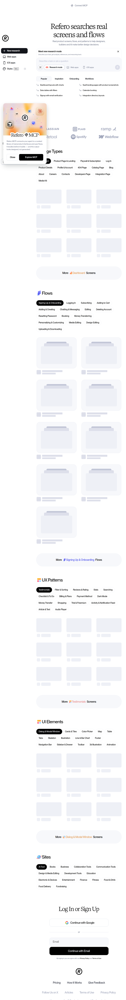
h1 "Design
Research for the AI Era", the "designers, builders and AI" line, Connect MCP and
Figma Plugin in the nav, and the human-browsed taxonomy underneath — the two
products in one screen.
screens/refero-positioning-2026-08.png · captured 2026-08-07, Chromium 1440×900Kept per the step-1 gate: studied for how construction is described, never scored for attention.
| Reference | What it contributes |
|---|---|
| Material 3 — colour roles | "There are 26 standard color roles organized into six groups: primary, secondary, tertiary, error, surface, and outline." Colour is named by role, not by hex; roles carry an accessibility contract ("accessible minimum 3:1 contrast") and ship as tokens. |
| Shopify Polaris — type tokens | The opposite convention: a numeric scale decoupled from the value —
--p-font-size-350: 14px, --p-font-size-400: 16px, weights
regular 450 / medium 550 / semibold 650 / bold 700. The value can change without
renaming the token. |
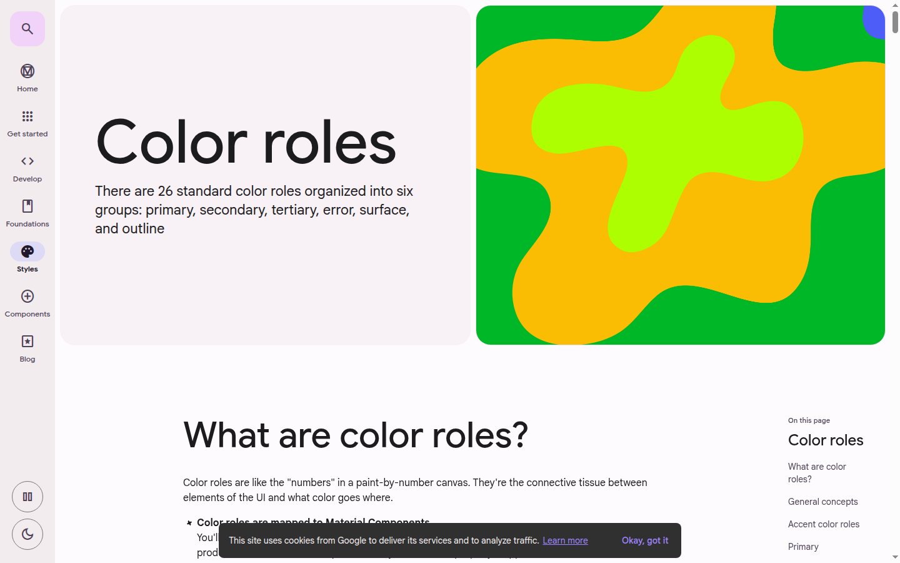
Consequence for Loupe. A breakdown that lists seven hexes is not reproducible. The colour field must carry role + value + usage, and the typography field must carry a named scale with its ratio, or success criterion 1 cannot be met.
dribbble-browse.png (opens on Popular, filters collapsed behind a button) and
figma-inspo-feed.png (Figma's Inspo is a Trending feed), with layers-explore.png
as a third.dribbble-auto-palette.png and refero-style-breakdown.png, with
Cosmos's colour and visual-similarity search as a third.mobbin-pricing.png ("Filter &
search results — Limited") and arena-home.png (200-block free cap), with Dribbble selling
search ranking inside Pro.DESIGN.md to paste into an agent.
Refined 2026-08-07: that spec is built to be fed to an agent so it can
generate — "it studies before it builds" — whereas Loupe's is read by a person so
they can understand and rebuild. The artifacts look alike; the consumers are opposite. So
the question is not only what a hand-written breakdown buys that the generated one does not, but
whether a spec written for a machine is even the same product as a spec written for a
person — and whether Loupe has to beat it or merely not lose to it.Dimension: how a product obtains unpaid structured work from its participants, and holds its quality without a paid moderation team.
Why this one. The matrix killed the obvious answer. Showing construction is no longer an empty niche. What no competitor has solved is the supply side: of twelve products, exactly one runs on breakdowns written by hand. Meanwhile authors visibly want structure they are not given. So the question is not "can the breakdown be shown" but "why would a person write one by hand when a machine writes it free" — [?] 1 of the brief, the one that rebuilds the spine if it fails.
Superseded in part on 2026-08-07 by /dsf:change — kept, not rewritten.
The brief now has the machine extract the objective fields and the author confirm them, so the
question above is no longer "why write the whole breakdown by hand". It narrows to: why would
a person write the intent for free — the one part extraction cannot reach.
Everything the benchmark measured stays valid and stays scored; what changed is the size of the thing
being supplied, not the mechanism that has to supply it.
Two consequences, recorded rather than smoothed over. (1) Mechanic 1 below — Discogs, the breakdown as the price of something the author wanted anyway — now has less to charge for, because the expensive part is pre-filled. (2) H4 — incompleteness must cost reach — no longer applies to the objective fields, which are complete on day one. It applies only to intent.
| # | Criterion | What a 1 looks like | What a 5 looks like |
|---|---|---|---|
| 1 | The contribution is structured | Prose into one box; nothing written becomes a field | Named fields with controlled values, and every value becomes a browsable index entry |
| 2 | Cost of the first contribution | More than ten required fields, or an approval, before anything can be saved | One required input; everything else optional and addable later |
| 3 | Partial contributions are legitimate | Incomplete submissions rejected or held in an invisible queue | Published anyway, incompleteness shown to readers, anyone can fill a gap later |
| 4 | Contributor identity accrues | Anonymous, or the name appears nowhere a reader looks | Every item names its contributor; their profile aggregates it as a visible count or rank |
| 5 | The contribution pays back into the contributor's own work | Contributing produces nothing the contributor can use | It produces something they needed anyway — a listing they wanted to sell, a page they would have built |
| 6 | Quality is regulated by readers, not staff | A paid or appointed team reviews everything before it appears | Published at once; quality governed by reader-visible signals, with the right to judge earned by participation |
| 7 | Thin entries are marked, not deleted | Weak entries vanish silently, or sit unmarked and indistinguishable from complete ones | A standing reader-visible marker that also functions as a task: it names what is missing and points at how to supply it |
| Product | Category | 1 | 2 | 3 | 4 | 5 | 6 | 7 | Total |
|---|---|---|---|---|---|---|---|---|---|
| Discogs | Music database + marketplace | 5 | 2 | 4 | 3 | 5 | 5 | 5 | 29 |
| Genius | Lyrics annotation | 3 | 5 | 5 | 5 | 3 | 4 | 3 | 28 |
| Stack Overflow | Q&A for programmers | 3 | 4 | 2 | 5 | 4 | 5 | 4 | 27 |
| Wikipedia | Encyclopedia | 3 | 5 | 5 | 2 | 1 | 5 | 5 | 26 |
| Letterboxd | Film diary + social | 2 | 5 | 5 | 4 | 5 | 2 | 1 | 24 |
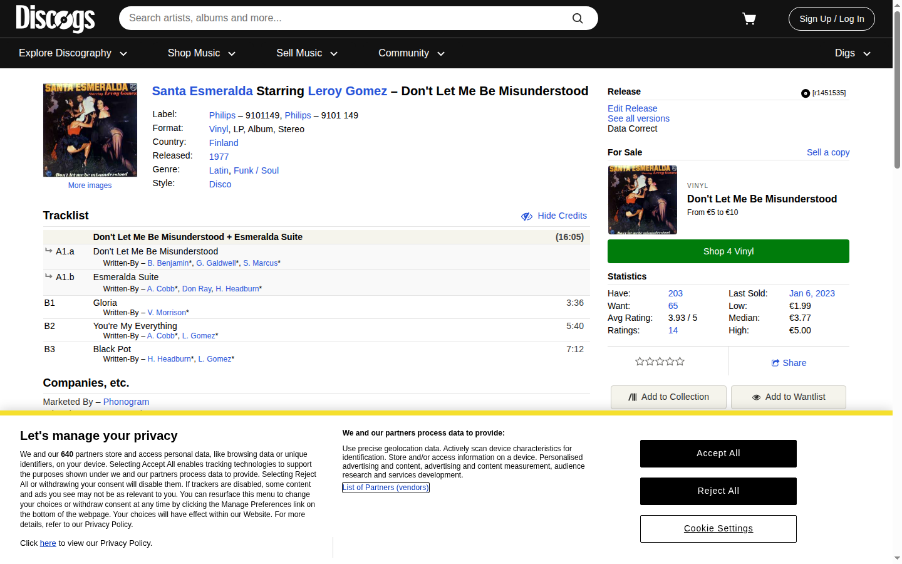
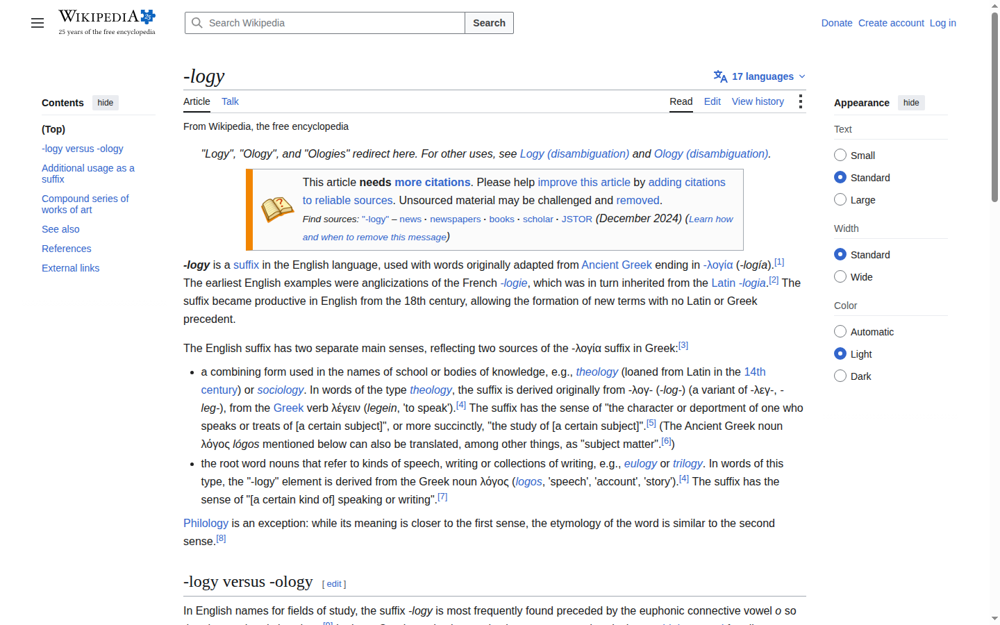
One that will not work here: a numeric reputation score as the primary motivator. Stack Overflow's points are earned by answering someone else's public question, so the score measures service against a queue that already exists. Loupe has no queue — the author publishes their own work, so the same score would measure self-promotion, and a leaderboard over self-published work rewards volume over craft. It also contradicts the brief's own hypothesis, which is a portfolio motive: "a breakdown is stronger proof of craft than a shot". A portfolio motive and a points motive pull in opposite directions.
The key interaction problem, in one sentence: how a designer who arrives with a named component to build — an empty state, a pricing table, an onboarding form — gets from that task to a small set of solved examples whose construction they can read, without knowing any tag, author or product name in advance.
| # | Pattern | How it works | In the wild | When it fits | When it breaks |
|---|---|---|---|---|---|
| 1 | Faceted filtering over declared fields | Each breakdown field is a facet with a controlled vocabulary and a live count; the user narrows by combining facets | Fonts In Use; Awwwards | The user knows which property matters, the vocabulary is small and shared, the corpus is large enough that narrowing pays | The wanted axis is not a facet; six facets return zero with no way back; the facet is only as reliable as the least careful contributor |
| 2 | Query by example | Point at an item or paste an image; the system returns neighbours by visual similarity. No vocabulary at all | Cosmos; Savee | The user can recognise what they want but cannot name it | The need is functional, not visual — two empty states solving first-run and filtered-to-zero look nothing alike. It cannot read the breakdown, so the author's work is dead weight |
| 3 | Natural-language task query over a model | Describe the task in a sentence; a model retrieves examples and returns reasoning | Refero research mode; Refero MCP | The need is a sentence, and the user wants an argument back rather than a grid | A small corpus manufactures confidence it has not earned; and it hides the index, so filling a field no longer makes the author findable |
| 4 | Structured browse by a task taxonomy | Navigation, not search: the entry point is a named list of design tasks | Refero (Page Types, Flows, UX Patterns, UI Elements); Mobbin | The user arrives with the task already named — exactly the brief's primary user | A task outside the taxonomy is invisible; past ~200 entries the taxonomy is itself a search problem |
| 5 | Follow-and-collect | Do not query the corpus; subscribe to authors and collections and retrieve from a small, human-filtered pool | Are.na channels; Fonts In Use Sets; Savee boards | Recurring taste needs and serendipity; cheap to build, strong for retention | Fails the primary user outright — someone with a component due today cannot wait. It answers "what is good", not "what solves this" |
Chosen: 1 — faceted filtering over declared fields. Confirmed at the human gate, 2026-08-06.
1. It is the only pattern in which the author's manual breakdown is what makes their work findable. The brief's spine — "because the breakdown travels with the work, property search is free" — is only true here. Pattern 2 ignores the fields, 3 hides them, 4 uses one and drops the rest, 5 skips the corpus. And the benchmark's first mechanic has nothing to pay the author with if the fields do not drive retrieval.
2. It matches the platform split already fixed in the brief. Desktop primary at ~1440px affords a persistent facet rail beside results; mobile is "browsing and saving to a collection, nothing else", which is what facets degrade into — a single chip row — with no feature lost.
3. It makes progressive completeness consequential instead of decorative. An item with an empty typography field is absent from typography-filtered results, so incompleteness has a visible cost to its author.
Second choice — and the condition is already partly met: 4, task taxonomy browse as the
entry, facets as the refinement inside it. The condition was written as "if phase 2b finds
the primary persona opens with a component name rather than a property". At the pattern gate the
designer reported that it already does: a respondent named Даня filters Mobbin by
«екран реєстрації» and «кошик».
Source: designer's report of an interview, given at the phase-2 pattern gate; no
interview artifact exists yet. /dsf:users must record that interview as a citable
artifact or carry the claim as [?]. If it holds, the taxonomy becomes the entry
surface and facets the refinement, on the Mobbin model — a reordering of the same two mechanisms, not
a replacement.
Disqualified: 3, natural-language AI query. The brief fixes the deliverable as a static front-end on fixtures, so the corpus is a few dozen items and a model over it would perform a confidence the data cannot support. More seriously, it severs the link between filling in a breakdown and being found — the one incentive the benchmark identified as load-bearing. Disqualified for this product at this size, not in principle.
| Gap | Hypothesis | Follows from |
|---|---|---|
| A machine already writes the breakdown, free. | What a machine cannot extract is why. Loupe's defensible field is the author's intent; the values are table stakes it must match, not the differentiator it was assumed to be. | Competitors — Refero row |
| Nobody has solved supply. One product of twelve runs on hand-written breakdowns. | The breakdown must be the price of something the author wanted anyway — filling it produces their own case-study page. | Benchmark — Discogs, criterion 5 |
| Whether breakdown quality needs moderation [?] | Neither staff review nor a free-for-all: a reader-visible quality state that only readers who earned the privilege by contributing can set. | Benchmark — mechanic 3 |
| How [?] should look in the UI | A gap is a task: named field, a date, and the control that fills it, inside the marker. | Benchmark — Wikipedia, criterion 7 |
| The retrieval mechanism [?] | Faceted filtering over declared fields; task-taxonomy browse tested as the entry in phase 2b. | Patterns — chosen pattern 1 |
| Is "grid" the right third axis? [?] | Evidence says no. The most complete construction spec on the market publishes density, 4px base unit, 1280px max width, section gap, card padding, element gap, radius per element and elevation — and never a column grid. The third axis should be spacing and shape. | Competitors — language reference |
| Trust without a click | The card must carry a reality status and a completeness state; popularity alone demonstrably fails. | Competitors — real differences, item 3 |
| Comparison [?], demoted at phase 1 | Keep it demoted. No competitor in the set ships a dedicated side-by-side view, including the two with the deepest structured data. | Competitors — matrix, all twelve rows |
| "Own work only" | The closest analogue deliberately rejects the restriction. It is a rights-and-authenticity trade-off that costs pool growth and should be stated as chosen, not assumed free. | Competitors — real differences, item 2 |
| Who the construction spec is written for added 2026-08-07 |
The market's auto-generated spec and Loupe's hand-written one have opposite consumers. Refero Styles + MCP exists so an agent can build from it — "it studies before it builds… the output looks designed, not generated" — while Loupe's exists so a person can understand a decision and rebuild it themselves. Consequence: matching the values is table stakes, not the contest; the contest is comprehension. Phase 3 must not design the breakdown screen as a spec dump — that is the machine-facing form, and a machine already does it better. | Competitors — "Why Refero is two rows" |
| Component or whole work? closed 2026-08-07 |
The finding stands; the recommendation did not survive the gate. This row asked phase 3 to pick one as the unit and let the other be a facet. The designer chose both — one screen or a whole case, each first-class — overriding it deliberately. What phase 3 inherits is not a choice but a cost: two unit shapes in one index, and the facets must mean the same thing on both. | Competitors — open questions, item 3 |
/dsf:users records the Даня interview as a citable artifact, or the
claim stays [?] and pattern 1 stands alone.Every factual claim above was walked and attached to a link or a screenshot path. What remains unsourced is listed here so it is not mistaken for collected data:
One correction, kept visible rather than tidied away. At the step-1 gate Layers was placed in the aspirational group on the rationale that it is a community built around writing about craft. The live site is a tag rail over a "Hot" shot feed with inline ads. The rationale did not survive verification; the row was kept as a data point and relabelled rather than quietly rewritten.